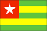

{kind=link}

|
Togo |  |
| Introduction Geography People Government Economy Communications Transportation Military Transnational Issues | ||
|
|
||
| Togo | Introduction | Top of Page |
| Background: | French Togoland became Togo in 1960. General Gnassingbe EYADEMA, installed as military ruler in 1967, is Africa's longest-serving head of state. Despite the facade of multiparty elections that resulted in EYADEMA's victory in 1993, the government continues to be dominated by the military. In addition, Togo has come under fire from international organizations for human rights abuses and is plagued by political unrest. Most bilateral and multilateral aid to Togo remains frozen. |
| Togo | Geography | Top of Page |
| Location: | Western Africa, bordering the Bight of Benin, between Benin and Ghana |
| Geographic coordinates: | 8 00 N, 1 10 E |
| Map references: | Africa |
| Area: |
total:
56,785 sq km
land: 54,385 sq km water: 2,400 sq km |
| Area - comparative: | slightly smaller than West Virginia |
| Land boundaries: |
total:
1,647 km
border countries: Benin 644 km, Burkina Faso 126 km, Ghana 877 km |
| Coastline: | 56 km |
| Maritime claims: |
exclusive economic zone:
200 NM
territorial sea: 30 NM |
| Climate: | tropical; hot, humid in south; semiarid in north |
| Terrain: | gently rolling savanna in north; central hills; southern plateau; low coastal plain with extensive lagoons and marshes |
| Elevation extremes: |
lowest point:
Atlantic Ocean 0 m
highest point: Mont Agou 986 m |
| Natural resources: | phosphates, limestone, marble, arable land |
| Land use: |
arable land:
38%
permanent crops: 7% permanent pastures: 4% forests and woodland: 17% other: 34% (1993 est.) |
| Irrigated land: | 70 sq km (1993 est.) |
| Natural hazards: | hot, dry harmattan wind can reduce visibility in north during winter; periodic droughts |
| Environment - current issues: | deforestation attributable to slash-and-burn agriculture and the use of wood for fuel; water pollution presents health hazards and hinders the fishing industry; air pollution increasing in urban areas |
| Environment - international agreements: |
party to:
Biodiversity, Climate Change, Desertification, Endangered Species, Law of the Sea, Nuclear Test Ban, Ozone Layer Protection, Ship Pollution, Tropical Timber 83, Tropical Timber 94, Wetlands
signed, but not ratified: none of the selected agreements |
| Togo | People | Top of Page |
| Population: |
5,153,088
note: estimates for this country explicitly take into account the effects of excess mortality due to AIDS; this can result in lower life expectancy, higher infant mortality and death rates, lower population and growth rates, and changes in the distribution of population by age and sex than would otherwise be expected (July 2001 est.) |
| Age structure: |
0-14 years:
45.63% (male 1,179,650; female 1,171,748)
15-64 years: 51.92% (male 1,302,197; female 1,373,247) 65 years and over: 2.45% (male 54,651; female 71,595) (2001 est.) |
| Population growth rate: | 2.6% (2001 est.) |
| Birth rate: | 37.04 births/1,000 population (2001 est.) |
| Death rate: | 11.24 deaths/1,000 population (2001 est.) |
| Net migration rate: | 0.15 migrant(s)/1,000 population (2001 est.) |
| Sex ratio: |
at birth:
1.03 male(s)/female
under 15 years: 1.01 male(s)/female 15-64 years: 0.95 male(s)/female 65 years and over: 0.76 male(s)/female total population: 0.97 male(s)/female (2001 est.) |
| Infant mortality rate: | 70.43 deaths/1,000 live births (2001 est.) |
| Life expectancy at birth: |
total population:
54.35 years
male: 52.38 years female: 56.38 years (2001 est.) |
| Total fertility rate: | 5.32 children born/woman (2001 est.) |
| HIV/AIDS - adult prevalence rate: | 5.98% (1999 est.) |
| HIV/AIDS - people living with HIV/AIDS: | 130,000 (1999 est.) |
| HIV/AIDS - deaths: | 14,000 (1999 est.) |
| Nationality: |
noun:
Togolese (singular and plural)
adjective: Togolese |
| Ethnic groups: | native African (37 tribes; largest and most important are Ewe, Mina, and Kabre) 99%, European and Syrian-Lebanese less than 1% |
| Religions: | indigenous beliefs 59%, Christian 29%, Muslim 12% |
| Languages: | French (official and the language of commerce), Ewe and Mina (the two major African languages in the south), Kabye (sometimes spelled Kabiye) and Dagomba (the two major African languages in the north) |
| Literacy: |
definition:
age 15 and over can read and write
total population: 51.7% male: 67% female: 37% (1995 est.) |
| Togo | Government | Top of Page |
| Country name: |
conventional long form:
Togolese Republic
conventional short form: Togo local long form: Republique Togolaise local short form: none former: French Togoland |
| Government type: | republic under transition to multiparty democratic rule |
| Capital: | Lome |
| Administrative divisions: | 5 regions (regions, singular - region); De La Kara, Des Plateaux, Des Savanes, Du Centre, Maritime |
| Independence: | 27 April 1960 (from French-administered UN trusteeship) |
| National holiday: | Independence Day, 27 April (1960) |
| Constitution: | multiparty draft constitution approved by High Council of the Republic 1 July 1992; adopted by public referendum 27 September 1992 |
| Legal system: | French-based court system |
| Suffrage: | NA years of age; universal adult |
| Executive branch: |
chief of state:
President Gen. Gnassingbe EYADEMA (since 14 April 1967)
head of government: Prime Minister Agbeyome KODJO (since 29 August 2000) cabinet: Council of Ministers appointed by the president and the prime minister elections: president elected by popular vote for a five-year term; election last held 21 June 1998 (next to be held NA 2003); prime minister appointed by the president election results: Gnassingbe EYADEMA reelected president; percent of vote - Gnassingbe EYADEMA 52.13%, Gilchrist OLYMPIO 34.12%, other 13.75% |
| Legislative branch: |
unicameral National Assembly (81 seats; members are elected by popular vote to serve five-year terms)
elections: last held 21 March 1999 (next due to be held NA October 2001) election results: percent of vote by party - NA%; seats by party - RPT 79, independents 2 note: Togo's main opposition parties boycotted the election because of EYADEMA's alleged manipulation of 1998 presidential polling; in March of 1999, opposition parties entered into negotiations with the president over the establishment of an independent electoral commission and a new round of legislative elections, now scheduled for October 2001 |
| Judicial branch: | Court of Appeal or Cour d'Appel; Supreme Court or Cour Supreme |
| Political parties and leaders: |
Action Committee for Renewal or CAR [Yawovi AGBOYIBO]; Coordination des Forces Nouvelles or CFN [Joseph KOFFIGOH]; Democratic Convention of African Peoples or CDPA [Leopold GNININVI]; Party for Democracy and Renewal or PDR [Zarifou AYEVA]; Patriotic Pan-African Convergence or CPP [Edem KODJO]; Rally of the Togolese People or RPT [President Gen. Gnassingbe EYADEMA]; Union of Forces for Change or UFC [Gilchrist OLYMPIO (in exile), Jeane-Pierre FABRE, general secretary in Togo]; Union of Independent Liberals or ULI [Jacques AMOUZO]
note: Rally of the Togolese People or RPT, led by President EYADEMA, was the only party until the formation of multiple parties was legalized 12 April 1991 |
| Political pressure groups and leaders: | NA |
| International organization participation: | ACCT, ACP, AfDB, CCC, ECA, ECOWAS, Entente, FAO, FZ, G-77, IBRD, ICAO, ICC, ICFTU, ICRM, IDA, IDB, IFAD, IFC, IFRCS, ILO, IMF, IMO, Intelsat, Interpol, IOC, ITU, MIPONUH, NAM, OAU, OIC, OPCW, UN, UNCTAD, UNESCO, UNIDO, UPU, WADB, WAEMU, WCL, WFTU, WHO, WIPO, WMO, WToO, WTrO |
| Diplomatic representation in the US: |
chief of mission:
Ambassador Akoussoulelov BODJONA
chancery: 2208 Massachusetts Avenue NW, Washington, DC 20008 telephone: [1] (202) 234-4212 FAX: [1] (202) 232-3190 |
| Diplomatic representation from the US: |
chief of mission:
Ambassador Karl HOFMANN
embassy: Angle Rue Kouenou and Rue 15 Beniglato, Lome mailing address: B. P. 852, Lome telephone: [228] 21 29 91 through 21 29 94 FAX: [228] 21 79 52 |
| Flag description: | five equal horizontal bands of green (top and bottom) alternating with yellow; there is a white five-pointed star on a red square in the upper hoist-side corner; uses the popular pan-African colors of Ethiopia |
| Togo | Economy | Top of Page |
| Economy - overview: | This small sub-Saharan economy is heavily dependent on both commercial and subsistence agriculture, which provides employment for 65% of the labor force. Some basic foodstuffs must still be imported. Together, cocoa, coffee, and cotton generate some 40% of export earnings, with cotton being the most significant cash crop despite falling prices on the world market. In the industrial sector, phosphate mining is by far the most important activity. Togo is the world's fourth largest producer, and geological advantages keep production costs low. The recently privatized mining operation, Office Togolais des Phosphates (OTP), is slowly recovering from a steep fall in prices in the early 1990's, but continues to face the challenge of tough foreign competition, exacerbated by weakening demand. Togo serves as a regional commercial and trade center. It continues to expand its duty-free export-processing zone (EPZ), launched in 1989, which has attracted enterprises from France, Italy, Scandinavia, the US, India, and China and created jobs for Togolese nationals. The government's decade-long effort, supported by the World Bank and the IMF, to implement economic reform measures, encourage foreign investment, and bring revenues in line with expenditures has stalled. Progress depends on following through on privatization, increased openness in government financial operations, progress towards legislative elections, and possible downsizing of the military, on which the regime has depended to stay in place. Lack of foreign aid, deterioration of the financial sector, energy shortages, and depressed commodity prices continue to constrain economic growth; however, Togo did realize a 3% gain in GDP in 1999. The takeover of the national power company by a Franco-Canadian consortium in 2000 should ease the energy crisis and if successful legislative elections pave the way for increased aid, growth should rise to 5% a year in 2001-02. |
| GDP: | purchasing power parity - $7.3 billion (2000 est.) |
| GDP - real growth rate: | 3.4% (2000 est.) |
| GDP - per capita: | purchasing power parity - $1,500 (2000 est.) |
| GDP - composition by sector: |
agriculture:
42%
industry: 21% services: 37% (1997) |
| Population below poverty line: | 32% (1989 est.) |
| Household income or consumption by percentage share: |
lowest 10%:
NA%
highest 10%: NA% |
| Inflation rate (consumer prices): | 2.5% (2000 est.) |
| Labor force: | 1.74 million (1996) |
| Labor force - by occupation: | agriculture 65%, industry 5%, services 30% (1998 est.) |
| Unemployment rate: | NA% |
| Budget: |
revenues:
$232 million
expenditures: $252 million, including capital expenditures of $NA (1997 est.) |
| Industries: | phosphate mining, agricultural processing, cement; handicrafts, textiles, beverages |
| Industrial production growth rate: | NA% |
| Electricity - production: | 92 million kWh (1999) |
| Electricity - production by source: |
fossil fuel:
97.83%
hydro: 2.17% nuclear: 0% other: 0% (1999) |
| Electricity - consumption: | 511.6 million kWh (1999) |
| Electricity - exports: | 0 kWh (1999) |
| Electricity - imports: |
426 million kWh
note: electricity supplied by Ghana (1999) |
| Agriculture - products: | coffee, cocoa, cotton, yams, cassava (tapioca), corn, beans, rice, millet, sorghum; livestock; fish |
| Exports: | $336 million (f.o.b., 2000) |
| Exports - commodities: | cotton, phosphates, coffee, cocoa |
| Exports - partners: | Nigeria, Brazil, Canada, Philippines (1999) |
| Imports: | $452 million (f.o.b., 2000) |
| Imports - commodities: | machinery and equipment, foodstuffs, petroleum products |
| Imports - partners: | Ghana, China, France, Cote d'Ivoire (1999) |
| Debt - external: | $1.5 billion (1999) |
| Economic aid - recipient: | $201.1 million (1995) |
| Currency: | Communaute Financiere Africaine franc (XOF); note - responsible authority is the Central Bank of the West African States |
| Currency code: | XOF |
| Exchange rates: | Communaute Financiere Africaine francs (XOF) per US dollar - 699.21 (January 2001), 711.98 (2000), 615.70 (1999), 589.95 (1998), 583.67 (1997), 511.55 (1996); note - from 1 January 1999, the XOF is pegged to the euro at a rate of 655.957 XOF per euro |
| Fiscal year: | calendar year |
| Togo | Communications | Top of Page |
| Telephones - main lines in use: | 25,000 (1997) |
| Telephones - mobile cellular: | 2,995 (1997) |
| Telephone system: |
general assessment:
fair system based on a network of microwave radio relay routes supplemented by open-wire lines and a mobile cellular system
domestic: microwave radio relay and open-wire lines for conventional system; cellular system has capacity of 10,000 telephones international: satellite earth stations - 1 Intelsat (Atlantic Ocean) and 1 Symphonie |
| Radio broadcast stations: | AM 2, FM 9, shortwave 4 (1998) |
| Radios: | 940,000 (1997) |
| Television broadcast stations: | 3 (plus two repeaters) (1997) |
| Televisions: | 73,000 (1997) |
| Internet country code: | .tg |
| Internet Service Providers (ISPs): | 3 (2000) |
| Internet users: | 10,000 (2000) |
| Togo | Transportation | Top of Page |
| Railways: |
total:
525 km (1995)
narrow gauge: 525 km 1.000-m gauge |
| Highways: |
total:
7,520 km
paved: 2,376 km unpaved: 5,144 km (1996) |
| Waterways: | 50 km (Mono river) |
| Ports and harbors: | Kpeme, Lome |
| Merchant marine: |
total:
1 ship (1,000 GRT or over) totaling 2,603 GRT/2,800 DWT
ships by type: specialized tanker 1 (2000 est.) |
| Airports: | 9 (2000 est.) |
| Airports - with paved runways: |
total:
2
2,438 to 3,047 m: 2 (2000 est.) |
| Airports - with unpaved runways: |
total:
7
914 to 1,523 m: 5 under 914 m: 2 (2000 est.) |
| Togo | Military | Top of Page |
| Military branches: | Army, Navy, Air Force, Gendarmerie |
| Military manpower - availability: | males age 15-49: 1,175,528 (2001 est.) |
| Military manpower - fit for military service: | males age 15-49: 616,622 (2001 est.) |
| Military expenditures - dollar figure: | $27 million (FY96) |
| Military expenditures - percent of GDP: | 2% (FY96) |
| Togo | Transnational Issues | Top of Page |
| Disputes - international: | none |
| Illicit drugs: | transit hub for Nigerian heroin and cocaine traffickers |